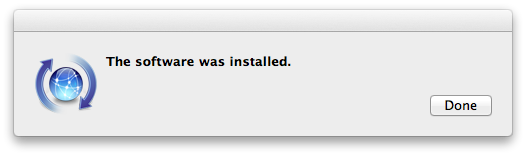
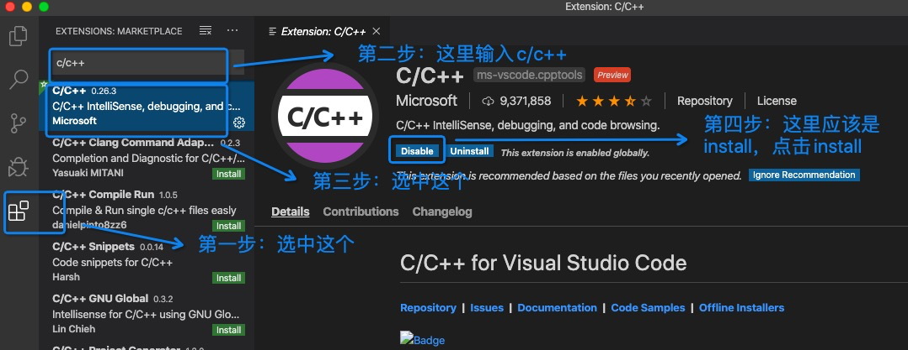
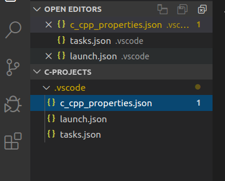
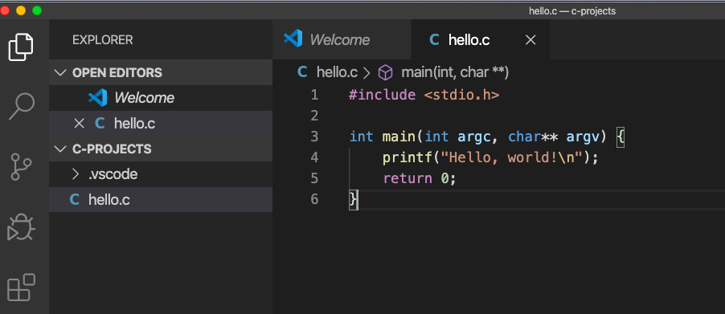

Table of Contents
1 安装clang
1.1 检查是否已经安装clang
终端命令行下输入： clang --version
bash-3.2$ clang --version Apple clang version 11.0.0 (clang-1100.0.33.16) Target: x86_64-apple-darwin19.2.0 Thread model: posix InstalledDir: /Library/Developer/CommandLineTools/usr/bin
如果出现上面的回显，说明已经安装了clang，可以跳过本节，开始下载VS Code并安装。
1.2 安装clang
- 打开终端，输入
command xcode-select --install; 并在弹出的窗口中选择install

- 接下来的License Agreement对话框中选取Agree：

- 出现下载和安装的界面：

- 安装完成后点击Done：

- 确认安装完成：

2 下载VS Code并安装
选择mac os版本下载并安装
3 安装VS Code C/C++插件
打开visual Studio Code，安装c/c++插件:

4 添加VS Code到PATH
- 打开VS code
- 使用⇧⌘P（同时按住Shift+Command+P）打开VS code命令行
输入“Shell”，从给出的建议中选择
Shell Command: Install 'code' command in PATH:
- 应该会看到VS Code窗口的右下角出现提示：“VS Code was successfully added to the PATH”.
- 关闭VS Code
5 配置VS Code的C语言编译选项
5.1 终端（命令行）下新建一个目录用于存放C的项目：
mkdir c-projects
5.2 将.vscode目录下载下来并放到这个目录下
在c项目目录（上一节新建的c-projects目录）下启动VS Code：
cd c-projects code .
此时应该可以出现VS的界面
在VS Code中新建.vscode目录：

选中.vscode目录, 新建文件（
c_cpp_properties.jsonlaunch.jsontasks.json），将github上的3个文件内容分别copy到新建的三个文件中


下载和拷贝完成后你的工作目录应该是这个样子的：

c-projects/ └── .vscode ├── c_cpp_properties.json ├── launch.json └── tasks.json
注意 .vscode是隐藏目录，需要使用
ls -la进行查看
6 Hello, World
创建你的第一个C程序并运行吧：
新建文件保存为hello.c，并输入如下代码：
#include <stdio.h> int main(int argc, char** argv) { printf("Hello, world!\n"); return 0; }
记得保存文件
使用⇧⌘B(同时按住Shift+Command+B)进行编译：

终端下可以看到多出了编译出来的可执行文件：hello
bash-3.2$ ls hello hello.c hello.dSYM
通过
./hello执行该文件